CPCC and 3DRobotics co-advised a Master of Engineering capstone project for a group of four students from the IEOR and EECS departments. The project investigated potential commercial applications of UAV research with a view to the upcoming federally mandated regulatory change.
Optimisation techniques were used to produce a simple path planning interface that allows waypoint generation for a UAV while optimising for to several constraints such as wind direction, air resistance and fuel economy. This capability is missing from current open source path planning tools.
By using parallel processing techniques and optimising generated code for ARM instruction set processors, we were able to achieve the maximum frame-rate possible using open source libraries and boards. This allows rapid prototyping of image processing applications. An EECS Master's report is available here.
It is hard to diagnose failure in multi-rotor UAVs at the moment. By attaching accelerometers to the UAV's frame and comparing live data against a known baseline, it is possible to detect mechanical failure - either as a pre-arm check or in-flight. We collected a set of data and, as part of a machine learning class project, were able to very accurate classify the UAV's structural health as erroneous or not. An EECS Master's report is available here and the machine learning class report is available here.
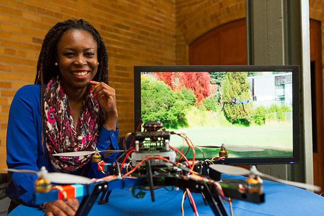
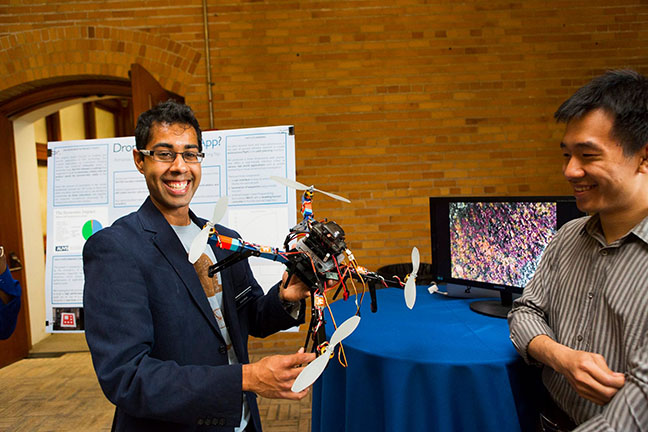
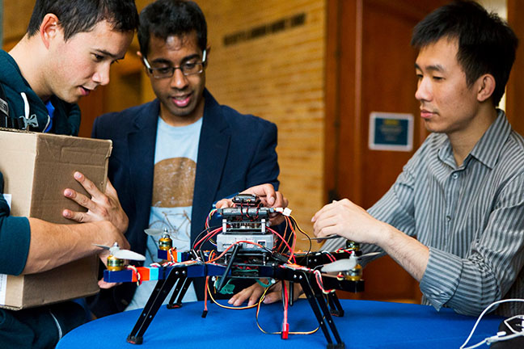
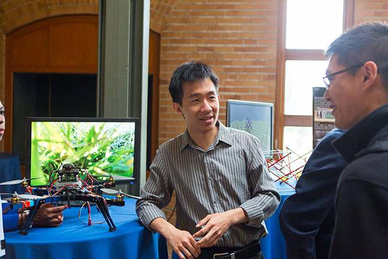
In collaboration with UnmannedData, CPCC used multirotor UAVs to carry out aerial photography for Bay Area design firm Hood Design. Our photographs were used to present the proposed construction to the local community from a perspective that could not be captured through conventional photography. Hood Design are responsible for designing the connection between the Oakland Bay Trail and Lake Merritt, updates on their project are available here. The Bay Trail is a biking and walking trail under construction that will eventually provide a 500 mile continuous route around the Bay.
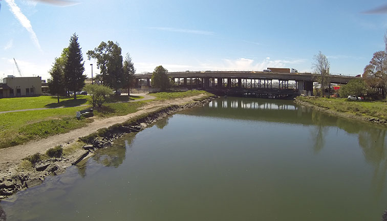
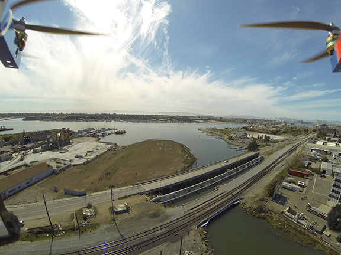
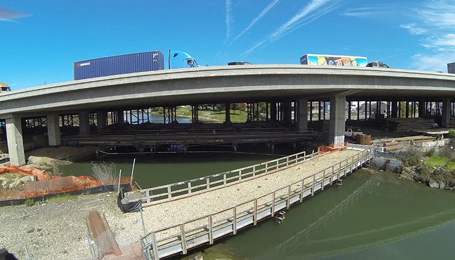
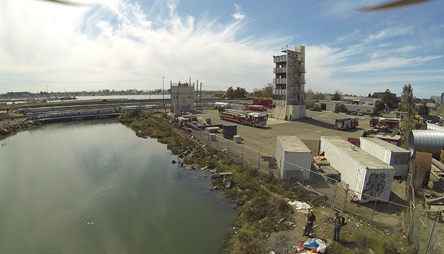
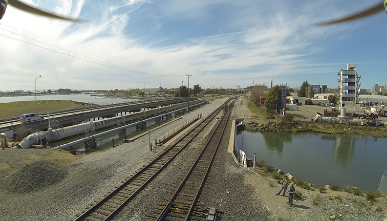
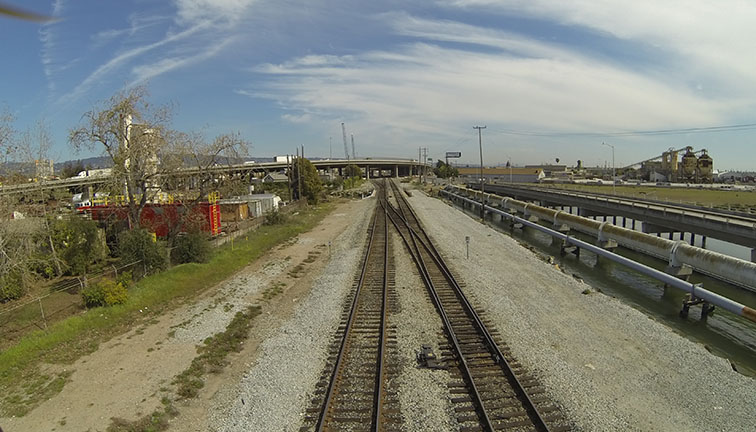
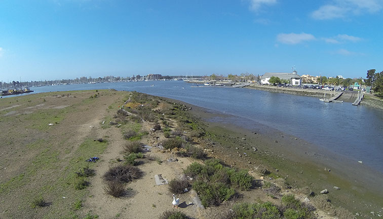
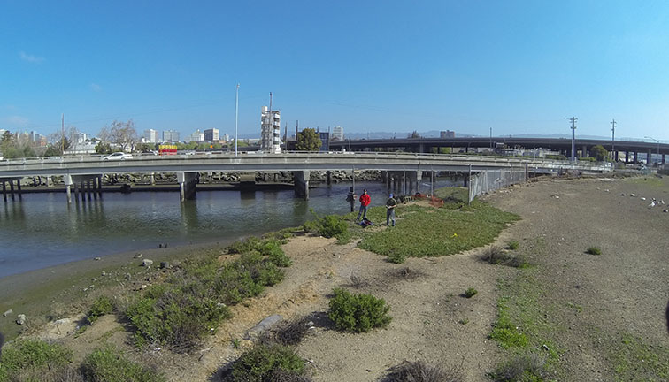
This video presents a conceptual future mail delivery demonstration using quadrotor UAV. Professor Wathiq Mansoov from the Department of Computer Engineering at the American University in Dubai (AUD) visited our UAV lab on March 12, 2014. During his visit, our lab member Gita performed this indoor demonstration.
Mail delivery demonstration at UAV lab at UC Berkeley.
The video describes an environmental monitoring exercise using networked vehicles and sensors. The exercise consisted of searching for an ship that committed an environmental hazard better known as "bilge dumping" and monitoring the respective oil spill. The oil was recreated using 100 kg of popcorn which is know to have similar dynamics. The popcorn was deployed by a Navy vessel. A fixed-wing Unmanned Aerial Vehicle (UAV) equipped with a gimbaled EO camera and a Automatic Identification System (AIS) receiver was deployed to search the "oil" spill and the "suspected" ship. After the oil spill was detected, a message was sent to a Navy vessel that deployed four drifters over the spill in order to forecast its dynamics. The drifters were equipped with GPS and broadcast their position using AIS. The UAV received the AIS information and visited the drifters location to assess their effectiveness while forecasting the oil spill trajectory.
Oil Spill Monitoring Exercise Using Networked Vehicles and Sensors, Portimão, Portugal from Eloi Pereira on Vimeo.
This video presents a demonstration performed under the collaboration of UC Berkeley Cyber-Physical Cloud Computing (CPCC) Lab and the Monterrey Bay Area Research Institute (MBARI). The purpose of this experiment was to use a small Unmanned Aerial Vehicle (a Zephyr flying wing) launched from an MBARI Zephyr vessel to detect oceanic fronts. A front is formed at the boundary between two masses of water with different temperatures. Fronts are rich habitats for biological activity. This activity can be observed by filaments of foam at the surface. The onboard video shows a clear front that appeared to have several miles of length. The filament is visible as well as the different masses of water which appear with slightly different colors.
UC Berkeley UAV operated from an MBARI vessel to detect oceanic fronts from Eloi Pereira on Vimeo.
The video presents a flight test of the searching and tracking algorithm. The position of the target is unknown (for the sake of visualization we present the target as a blue circle). The target detection is abstracted using GPS and a model of a gimbaled camera. An operator defines a initial likelihood map of the target position. The present case shows the definition of a gaussian map with a given mean and variance. The UAV starts searching for the target steering towards the maximum of the a priori likelihood map. During searching, the likelihood map is updated regarding the sensor model, i.e. if the target is not detected under the sensor footprint the likelihood map is decreased to near zero, if the target is detected the likelihood map becomes a gaussian function with mean centered at the estimated target position and a variance that models the sensor resolution error. When the target is detected the algorithm switches to a tracking algorithm. The algorithm switches back to searching mode whenever the target gets outside the sensor's footprint. This work is a summer project performed by researchers from UC Berkeley (CPCC project - cpcc.berkeley.edu/), Academia da Força Aérea, and FEUP.
Flight test: Search and Track at Ota Air Base, Portugal from Eloi Pereira on Vimeo.
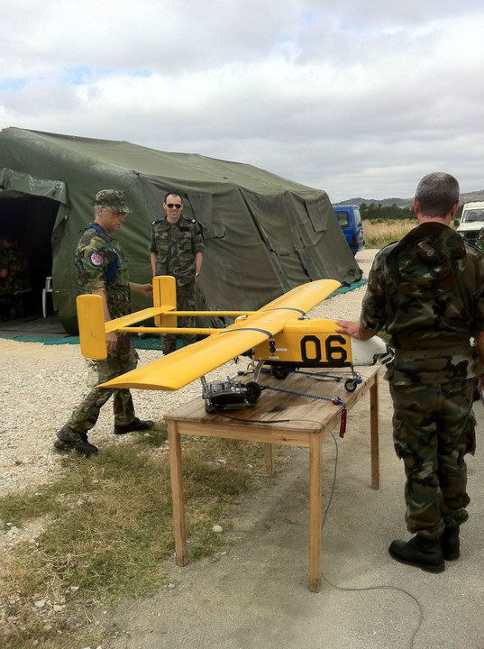
The CPCC Sense Act Move (SAM) platform provides the infrastructure to create so-called virtual vehicles (VV) that are capable of executing certain user-defined tasks. VVs are deployed into a cloud of real vehicles (RV) which provide execution platforms that may be moving in space. Furthermore, users are able to create a mapping plans that tells the system how VVs move across several RVs. The platform provides a website to control the system of RVs and VVs. The parts in more detail:
Virtual Vehicles
VVs are either created online, or programmed offline and uploaded to the platform. The specification language is JavaScript. Currently the capabilities of a VV include simple arithmetic calculations, access to sensor values, i.e. GPS position, access to a storage mechanism that is tied to the VV, and migration. The underlying infrastructure of VVs is designed to allow migration at any point in time, triggered by the user program. For example, if the program decides that it has captured enough sensor values at a certain position, it can decide to migrate onto a different RV.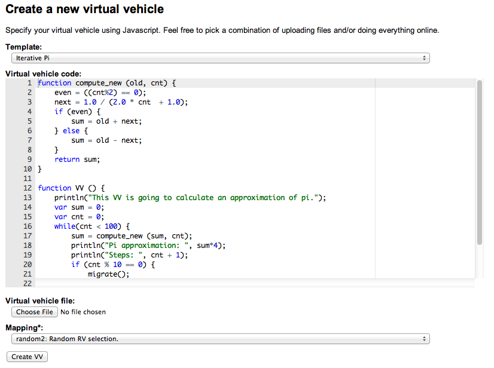
Real Vehicles
RVs provide the execution platform that is facilitated by one or more VVs. An RV can host multiple VVs. Currently the RV is an Android phone hosting a CPCC application. As soon as a phone user registers an account with the platform, the phone is connected to the cloud and therefore a possible receiver of one or multiple VVs. While RVs are tied to an account, they act as completely anonymous computation providers in the cloud. In order to run VVs the RVs provide a JavaScript sandbox which is shipped with the Android application. Currently the VVs are isolated from each other in way that there is no direct access from one VV to another one. (They don't even know that other VVs are on the same RV). A VV migration triggers the RV to pack the complete sandbox state into a VV package and send it to a central server, where the mapping algorithm is triggered to a find a new RV (or the execution is terminated).
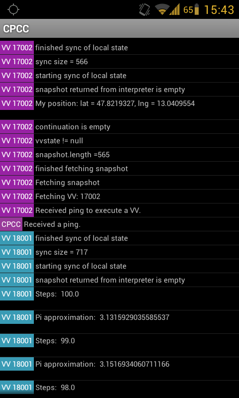
Mapping plan
Mapping algorithms specify how VVs migrate across different RVs. The specification language is JavaScript. The mapping algorithms can be used to force the execution of a VV to happen in a certain area, as the programs have access to the position of the RVs (in a regulated way). Another example would be that a group of RVs can be selected in a round-robin fashion, to avoid using some RV to often.
This simulation system demonstrates information-acquisition-as-a-service of mobile sensor networks for cyber-physical cloud computing (CPCC) as proposed in [1]. Based on the JNavigator project [2] the implementation provides
(1) The simulation of physical helicopter swarms;
(2) The simulation of sensors;
(3) The virtual abstraction of autonomous vehicles (virtual vehicles);
(4) The migration of virtual vehicles among flying physical helicopters (real vehicles).
The implemented system currently allows the simulation of helicopter fleets of several dozens of vehicles and supports the simulation of sensors like GPS receivers and photo cameras. To simulate air-pressure sensors, temperature sensors, etc. the system utilizes random number generators, which deliver values in a defined range and precision.
Simulated helicopters do not access the onboard sensors for data collection. It is a virtual abstraction of autonomous vehicles, Virtual Vehicles (VVs) for short, that gathers data. One helicopter is able to carry several VVs. To complete their missions, VVs may migrate between helicopters.
Demos of the CPCC Simulator can be found here.
[1] Craciunas, S.S., Haas, A., Kirsch, C.M., Payer, H., ock, H., Rottmann, A., Sokolova, A., Trummer, R., Love, J., and Sengupta, R.:Information-acquisition-as-a-service for cyber-physical cloud computing. In Proc. Workshop on Hot Topics in Cloud Computing (HotCloud). USENIX, 2010.
[2] Krainer, Clemens D.: JNavigator - An Autonomous Navigation System for the JAviator Quadrotor Helicopter. Master's thesis, University of Salzburg, Austria, 2009.
Our undergraduates have been working to use the Robotic Operating System (ROS) along with the AR Drone driver developed by Brown University in conjunction with OpenCV (open source C++ image processing library) to establish an easily deployable platform for testing multi-UAV algorithms. This platform has allowed for obtaining video stream through the AR Drone, processing the video, and using the results to control the AR Drone. Current work involves the use of this test bed for tracking a colored object using a single UAV. Future goals include the use of multiple automated drones to cooperatively complete a task.
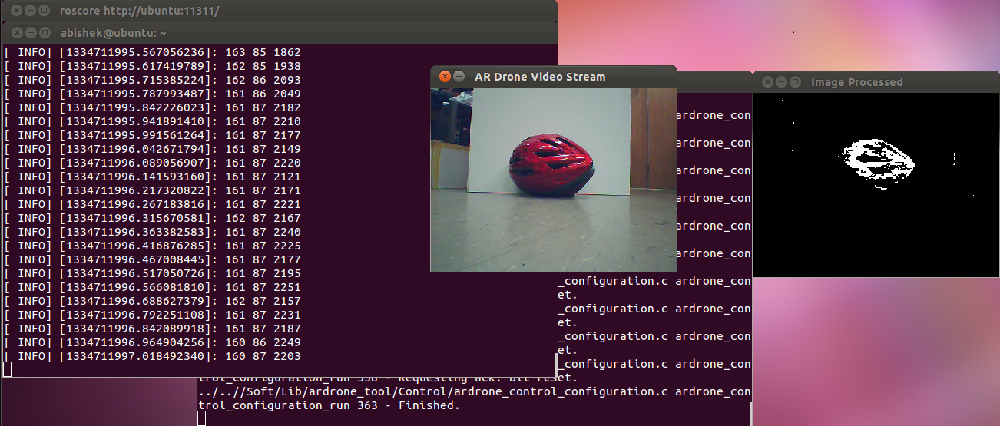
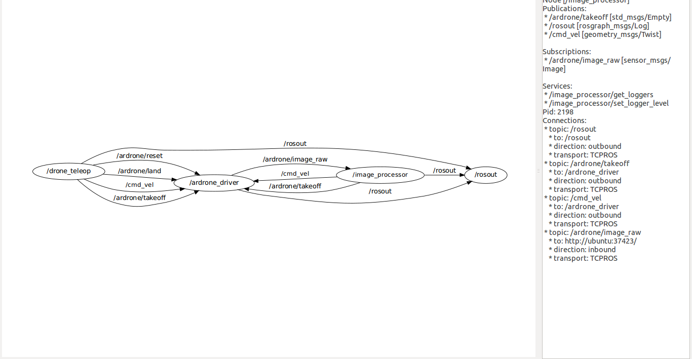
This video presents a preliminary flight test of a flying wing UAV sampling CO2 concentration in flight. The goal of the project is to create a mobile and easily deployable CO2 senor network utilizing a team of inexpensive autonomous UAVs. As shown in the video, the UAV was equipped with an ardupilot-mega autopilot system and a k-30 CO2 sensor. The zephyr flying wing airframe used in the video is capable of carrying up to 1 pound of payload and has a max flight duration of 30 minutes. The ardupilot-mega autopilot is an inexpensive open source autopilot system capable of autonomous way point flights, flight by wire mode, and manual mode. The k-30 CO2 sensor used has a measurement range of 0-10,000 ppm and more information can be found on their website. The flight test was performed near Merritt College in Oakland, California and the aircraft was flown in manual mode.
C. Kirsch etc., Cyber-Physical Cloud Computing: The Binding and Migration Problem. [pdf]
J. Love, Network-Level Control of Collaborative UAVs.[pdf]
S. Craciunas, J. Love etc., Information-Acquisition-as-a-Service for Cyber-Physical Cloud Computing.[pdf]
J. Love etc., CSL: A Language to Specify and Re-Specify Mobile Sensor Network Behaviors.[pdf]
Center for Collaborative Control of Unmanned Vehicles (C3UV)
The Computational Systems Group at the University of Salzburg